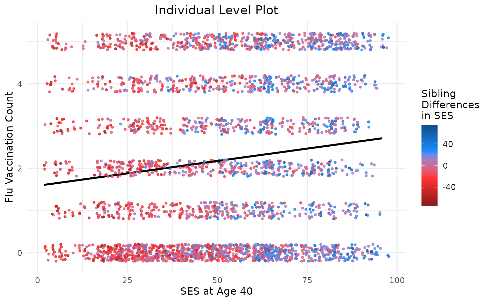
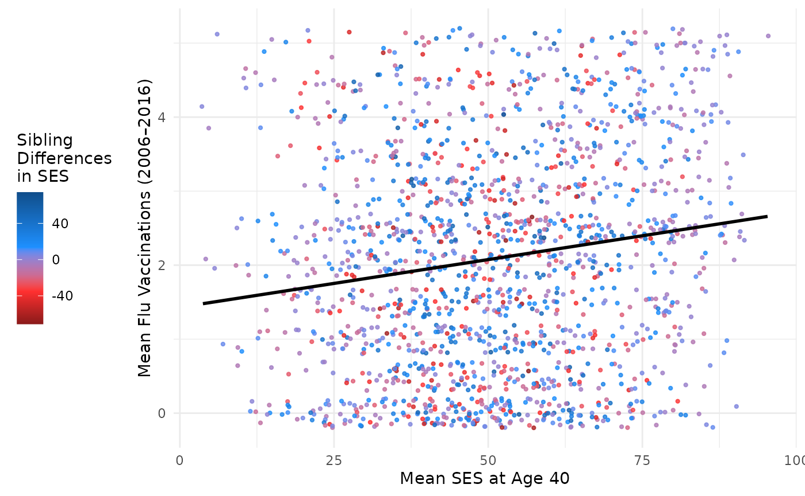
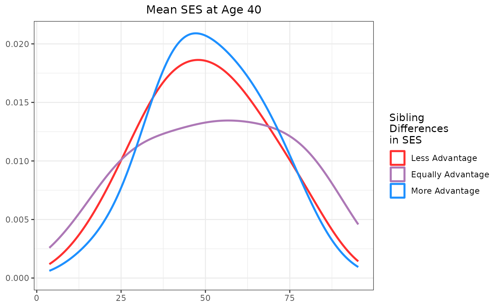
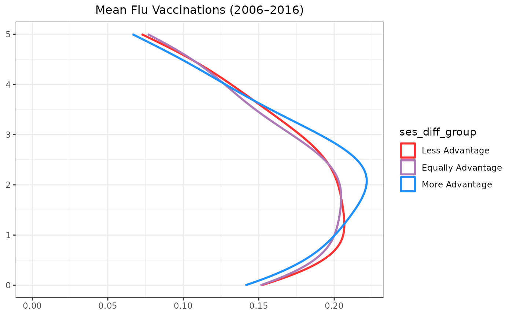
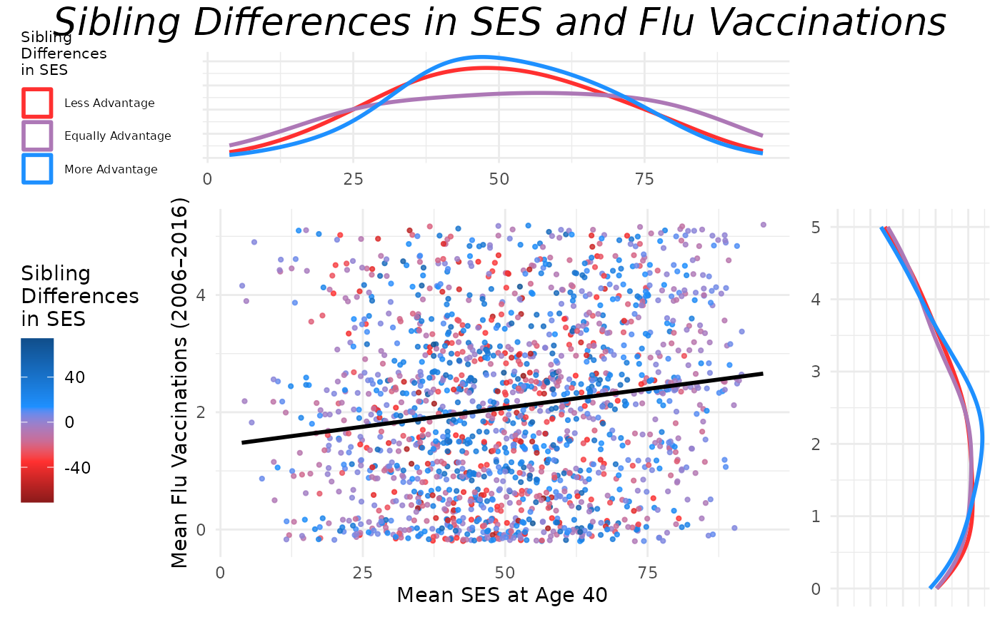
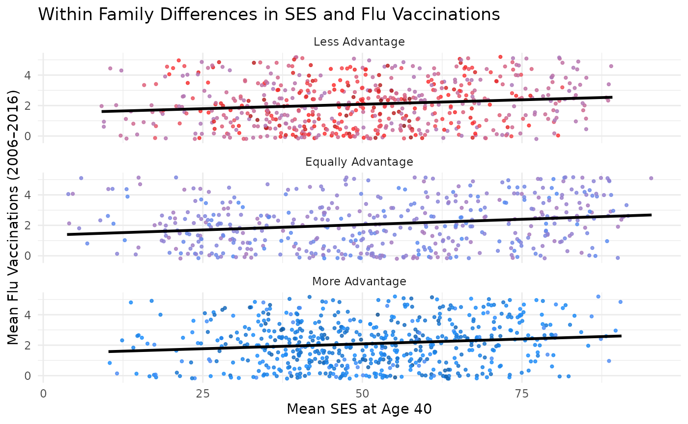
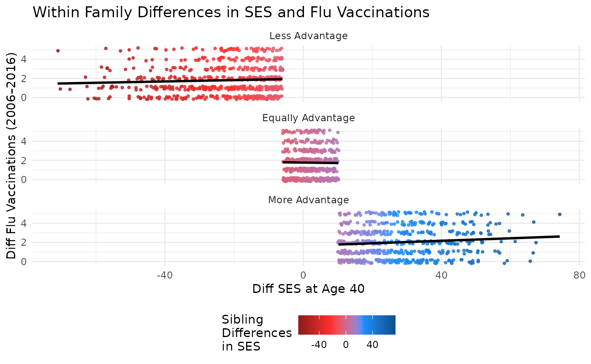

Introduction
This vignette walks through the steps needed to recreate a figure
from Garrison and Rodgers (2016). The example uses kinship pair data
prepared with the discord package and visualizes the results using
updated ggplot2 tools.
Data Preparation
Data Cleaning
This section reuses the data preparation pipeline developed in the
regression vignette.
That vignette demonstrated how to set up data for discordant regression
analysis by using discord data processing tools. Those tools facilitate
the construction of kinship links, including identifying sibling pairs,
merging sibling characteristics, and calculating pair-level
variables.
Here, we reuse that same pipeline to prepare the data for
plotting.
Specifically, we apply the same kinship pairing, data merging, and
cleaning procedures, but our focus is now on visualizing patterns rather
than fitting regression models.
The underlying dataset is the NLSY79, which includes measures of flu
vaccination and socioeconomic status (SES) for kinship pairs.
As in the regression vignette, we restrict the sample to individuals who
are housemates and have a relatedness of 0.5.
For full details on the data processing and kinship link construction, see the regression vignette.
## Setup: Use discord_data
# Visualizing the Results
library(discord)
library(NlsyLinks)
library(tidyverse)
library(ggplot2)
library(grid)
library(gridExtra)
library(janitor)
# Load the data
data(data_flu_ses)
# Get kinship links for individuals with the following variables:
link_vars <- c(
"FLU_total", "FLU_2008", "FLU_2010",
"FLU_2012", "FLU_2014", "FLU_2016",
"S00_H40", "RACE", "SEX"
)
link_pairs <- Links79PairExpanded %>%
filter(RelationshipPath == "Gen1Housemates" & RFull == 0.5)
df_link <- CreatePairLinksSingleEntered(
outcomeDataset = data_flu_ses,
linksPairDataset = link_pairs,
outcomeNames = link_vars
)
consistent_kin <- df_link %>%
group_by(SubjectTag_S1, SubjectTag_S2) %>%
count(
FLU_2008_S1, FLU_2010_S1,
FLU_2012_S1, FLU_2014_S1,
FLU_2016_S1, FLU_2008_S2,
FLU_2010_S2, FLU_2012_S2,
FLU_2014_S2, FLU_2016_S2
) %>%
na.omit()
# Create the flu_modeling_data object with only consistent responders.
# Clean the column names with the {janitor} package.
flu_modeling_data <- semi_join(df_link,
consistent_kin,
by = c(
"SubjectTag_S1",
"SubjectTag_S2"
)
) %>%
clean_names()Creating the Discord Data
With the data prepared, we restructure it using
discord_data().
discord_flu <- discord_data(
data = flu_modeling_data,
outcome = "flu_total",
predictors = "s00_h40",
id = "extended_id",
sex = "sex",
race = "race",
pair_identifiers = c("_s1", "_s2"),
demographics = "both"
) %>%
filter(!is.na(s00_h40_mean), !is.na(flu_total_mean))Because we are interested in differences between kin, we create a new
variable, ses_diff_group, that classifies SES differences
into three categories: “More Advantage”, “Equally Advantage”, and “Less
Advantage”. This variable is later used to group observations in the
marginal density plots.
discord_flu <- discord_flu %>%
mutate(
# # Classify Difference Grouping
ses_diff_group = factor(
case_when(
scale(s00_h40_diff) > 0.33 ~ "More Advantage",
scale(s00_h40_diff) < -0.33 ~ "Less Advantage",
abs(scale(s00_h40_diff)) <= 0.33 ~ "Equally Advantage"
),
levels = c(
"Less Advantage",
"Equally Advantage",
"More Advantage"
)
)
)
# Create a color palette for the shading
shading <- c("firebrick4", "firebrick1", "dodgerblue1", "dodgerblue4")
max_val <- max(abs(discord_flu$s00_h40_diff), na.rm = TRUE)
values <- seq(-max_val, max_val, length = length(shading))Plotting the Data
Individual Level Plots
This scatter plot shows individual SES at age 40 against individual flu vaccinations.
# Individual level plot
individual_plot <- ggplot(flu_modeling_data, aes(
x = s00_h40_s1,
y = flu_total_s1,
color = s00_h40_s1 - s00_h40_s2
)) +
geom_point(
size = 0.8, alpha = 0.8, na.rm = TRUE,
position = position_jitter(width = 0.2, height = 0.2)
) +
geom_smooth(method = "lm", se = FALSE, color = "black") +
# added sibling 2 to the plot
geom_point(
size = 0.8, alpha = 0.8, na.rm = TRUE,
position = position_jitter(w = 0.2, h = 0.2),
aes(
x = s00_h40_s2,
y = flu_total_s2,
color = s00_h40_s2 - s00_h40_s1
)
) +
scale_colour_gradientn(
name = "Sibling\nDifferences\nin SES",
colours = shading,
na.value = "#AD78B6",
values = scales::rescale(c(-max_val, max_val))
) +
labs(
x = "SES at Age 40",
y = "Flu Vaccination Count"
) +
theme_minimal() #+
# theme(legend.position = "none")
individual_plot +
ggtitle("Individual Level Plot") +
theme(plot.title = element_text(hjust = 0.5))## Warning: Removed 3 rows containing non-finite outside the scale range
## (`stat_smooth()`).
Between Family Plots
This scatter plot shows mean SES at age 40 against mean flu vaccinations, with point color indicating SES differences between kin. Marginal density plots display the distribution for each group.

Adding Marginal Density Plots
We overlay marginal density plots for SES and flu vaccinations, grouped by SES difference category.
# Marginal X density (SES mean)
xdensity <- ggplot(discord_flu, aes(x = s00_h40_mean, group = ses_diff_group, color = ses_diff_group)) +
geom_density(adjust = 2, linewidth = 1, fill = NA) +
scale_colour_manual(
name = "Sibling\nDifferences\nin SES",
values = c("firebrick1", "#AD78B6", "dodgerblue1")
) +
theme_minimal() +
theme(
legend.position = "left",
axis.title.y = element_blank(),
axis.text.y = element_blank(),
legend.title = element_text(size = 8),
legend.text = element_text(size = 6)
) +
labs(x = NULL, y = NULL)
# Marginal Y density (Flu mean)
ydensity <- ggplot(discord_flu, aes(x = flu_total_mean, group = ses_diff_group, color = ses_diff_group)) +
geom_density(adjust = 2, linewidth = 1, fill = NA) +
scale_colour_manual(
values = c("firebrick1", "#AD78B6", "dodgerblue1")
) +
coord_flip() +
theme_minimal() +
theme(
legend.position = "none",
axis.title.x = element_blank(),
axis.text.x = element_blank()
) +
labs(x = NULL, y = NULL)These plots display the distributions of mean SES and flu vaccinations, grouped by SES difference category. Titles have been added for clarity.

# Blank placeholder plot
blankPlot <- ggplot() +
theme_void()
# Final layout (true layout you originally had: AB above CC)
grid.arrange(
arrangeGrob(xdensity, blankPlot, ncol = 2, widths = c(4, 1)),
arrangeGrob(main_plot, ydensity, ncol = 2, widths = c(4, 1)),
heights = c(1.5, 4),
top = textGrob("Sibling Differences in SES and Flu Vaccinations",
gp = gpar(fontsize = 20, font = 3)
)
)## `geom_smooth()` using formula = 'y ~ x'
Other ways to plot this data include using facet_wrap to
create separate panels for each SES difference group. This can help
visualize the differences in flu vaccinations across different SES
categories.

Within Family Plots
This plot compares differences in SES at age 40 to differences in flu vaccinations, with points colored by SES difference. Marginal plots are omitted for simplicity but can be added using the same structure.
# Within Family
## Setup: Use discord_data
# Main scatter plot
main_plot_within <- ggplot(discord_flu, aes(
x = s00_h40_diff,
y = flu_total_diff, colour = s00_h40_diff
)) +
geom_point(
size = 0.8, alpha = 0.8, na.rm = TRUE,
position = position_jitter(w = 0.2, h = 0.2)
) +
geom_smooth(method = "lm", se = FALSE, color = "black") +
scale_colour_gradientn(
name = "Sibling\nDifferences\nin SES",
colours = shading,
na.value = "#AD78B6",
values = scales::rescale(c(
min(discord_flu$s00_h40_diff, na.rm = TRUE),
mean(discord_flu$s00_h40_diff, na.rm = TRUE),
max(discord_flu$s00_h40_diff, na.rm = TRUE)
))
) +
theme_minimal() +
theme(legend.position = "left") +
labs(x = "Diff SES at Age 40", y = "Diff Flu Vaccinations (2006–2016)")
main_plot_within
You can further facet this plot by the difference in SES between kin to see how the relationship varies across different groups. The following code does this and adds a title to the plot.
main_plot_within + facet_wrap(~ses_diff_group, ncol = 1) +
theme(legend.position = "bottom") +
labs(title = "Within Family Differences in SES and Flu Vaccinations")
Conclusion
This vignette demonstrated how to visualize sibling differences in SES and flu vaccinations using discord-structured data. Scatter and density plots highlight associations by SES difference group. The use of color to indicate the difference in SES between kin adds an additional layer of insight into the data.